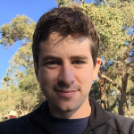

Need more information?
Are you a competitor in Melbourne Science Hackfest? We'll have data mentors from CSIRO, TERN, ALA and AURIN available for the duration of the weekend to answer your questions, help you with project ideas and with finding any extra data you might need.
| Mentors from CSIRO | |
|---|---|
 |
Jens Klump I'm the CSIRO Science Leader for Earth Science Informatics. I'm interested in data driven science, including simulation, remotely operated instruments, and high performance and cloud computing. I also work with organizations like ANDS on long-term preservation of research data, and I can help you find some of the more interesting datasets in the Research Data Australia and CSIRO data archives. I'm on twitter @snet_jklump, or send me an email: jens.klump@csiro.au. |
 |
Jess Robertson I’m a geologist/physicist/data scientist at the CSIRO. I work on a range of science projects across the organisation, generally using geoscience and geospatial data with machine learning and data analysis to improve exploration and production strategies for the minerals and mets sector. As well as science-y things, you can ask me about webservices, maps and geospatial data. Python is my poison of choice. Ping me on twitter @jesserobertson, or send me an email: jesse.robertson@csiro.au. |
Sue Cook Sue is part of the Research Data Support team in CSIRO. She has interests in managing, sharing and publishing research data. Sue can help you find CSIRO data, use the CSIRO Data Access Portal (DAP) data.csiro.au, and support your use of the DAP API. Email the team at researchdatasupport@csiro.au, or contact Sue via Twitter: @suelibrarian |
|
 |
Dom Hogan Dom is part of the Research Data Support team in CSIRO. He has interests in managing, sharing and publishing research data. Dom can help you find CSIRO data, use the CSIRO Data Access Portal (DAP) data.csiro.au, and support your use of the DAP API. Email the team at researchdatasupport@csiro.au |
| Mentor from TERN | |
Peter Isaac Peter originally trained as a meteorologist with the New Zealand Meteorological Service in the early '80s but was never able to get the forecast right, so moved into air quality research before going sideways into the National Institute of Water and Atmospheric Research when New Zealand science was restructured in the early '90s. In the throes of a mid-life crisis in 1994, he began a PhD at Flinders University, did a post-doc at Monash University in 2007 and then fell out of academia. He now works as the Data Manager for OzFlux, the TERN facility that operates a network of sites around Australia measuring the exchange of water and carbon between terrestrial ecosystems and the atmosphere. Peter started massaging data with FORTRAN 77 programs written using the TECO editor (look it up!), used QuickBASIC to write data acquisition programs and then fell in love with IDL. That affair ended badly when Kodak took over IDL but after a short period of heartbreak he discovered Python and has happily known requited love ever since. |
|
| Mentors from Atlas of Living Australia | |
Peggy Newman I'm a developer with the Atlas of Living Australia but my desk is at Museum Victoria with the Online Collections team. My main work focus is ZoaTrack.org, a web platform for animal telemetry analytics and data management. I work with Java, R and GIS, and a few different viz tools, and am interested in all things open data and open science. I get pretty excited about things like data quality, database design data modelling. I'll be able to help with using the Atlas' APIs and datasets. I'm on peggy.newman@csiro.au |
|
Sathish Sathyamoorthy Sathish is part of the Atlas of Living Australia (ALA) team in CSIRO. He has experience in providing end to end internet solutions to real world problems for both web and mobile platforms. Sathish can help you to get an access to wealth of information about Australia's biodiversity data which includes 55.6 million records. Email the team at support@ala.org.au |
|
Ben Raymond I am a computational ecologist and general data stickybeak, and have been involved with the Atlas of Living Australia since 2009. I'm into novel analyses of ecological data, data visualisation including 3d printing, and was a finalist in the 2015 Ebbe Nielsen Challenge for innovative applications of biodiversity data. I am an author and maintainer of the ALA4R package. I'll be able to help with ecological and remote-sensed data, primarily using R and Matlab (but other frameworks as well). Contact me at ben_ala -at- untan.gl |
|
| Mentors from IMOS | |
Laurent Besnard With a background in Fundamental Physics and Physcial Oceanography, Laurent has been working with IMOS/eMII, Hobart as a data scientist since early 2009. In this big adventure to spread the data sharing spirit, his interest has been mainly focused on delivering oceanography data, automating systems, and programming data tools to first time and power users. A couple of other major personal interests include instruments playing, and coding some tools for his various outdoors activities. |
|
Angus Scheibner Angus is a software engineer living in Hobart, Tasmania. After completing various Bachelor degrees in Computing, Economics and Mathematics at the University of Tasmania, his interest in web-based data delivery technology was ignited by landing a position at the Integrated Marine Observing System. Angus is a passionate cyclist, and loves to spend as much time as possible riding, racing and talking about his many two-wheeled steeds. When he's not out spinning the cranks, you can find him at http://www.linkedin.com/in/angusscheibner. |
|
| Mentor from AuScope | |
Vincent Fazio I am a software engineer. I have worked in a wide variety of industries: biotechnology, defence, telecommunications, services and consumer product development. I have written software for databases, servers, desktops, websites, middleware, handheld devices. I am not a specialist, but I enjoy taking a set of ideas, honing them and turning them into workable software, using whatever tools are available. I will help you find the tools and the data you need to create your ideas. |
|
| Mentor from AURIN | |
Emma Joughin Emma wears many hats at AURIN. She helps users get the most out of the Portal and Data services and wrangles the data providers and contributors to the AURIN Workbench, ensuring AURIN is delivering what the researchers need. She has a background in GIS and project management and when she isn’t cracking her AURIN whip she enjoys yoga, beer, hiking in the forest and taking trips in her caravan Doris. | |
Robert Hutton Robert's training was in Software Engineering and Cell Biology at the University of Melbourne. He has worked as a systems administrator at Therapeutic Guidelines in North Melbourne, The University of Oxford in the UK and now at the University of Melbourne with the AURIN project. In his spare time Robert loves to hang out with this six month old son, brew beer, hike in the wilderness and speak French (badly). | Rachel Lerm Rachel is the Urban Data Analyst for AURIN. Her main job function is to prepare and update data/metadata for the AURIN Portal. Rachel is a certified Geographic Information Systems Professional (GISP-AP) with over ten years industry experience. When she isn’t crunching data Rachel enjoys going to the footy, dancing at music festivals and attending all the great events Melbourne has to offer. |
| Mentor from German National Library of Science and Technology | |
 |
Peter Löwe Peter is a physical Geographer. He learned the ropes of GIS at UT Austin in 1994 and ventured into FOSS GIS during his PhD study (Radar meteorology/Soil Erosion in South Africa, which relied heavily on GRASS GIS and for which he received several awards. Following his PhD he founded GEOMANCERS.net (now: GISIX.com), producing GISIX, the first portable FOSSGIS workbench based on a live-Linux CD/DVD. He also worked as a Ranger in the UNESCO Geopark Bergstrasse-Odenwald (south of Frankfurt a.M., Germany), developing prototype WebGIS-solutions and Globe-Browser interfaces for the trail network. He actively advocates FOSSGIS in Science in the Earth and Space Informatics (ESSI) chapters of both the European Geoscience Union (EGU) and the American Geophysical Union (AGU) and has been organizing OSGeo Townhall events at the annual EGU General Assembly since 2014. Since 2015 he is a member of the OSGeo Open Geoscience Committee. For the development of early warning systems, triggered by the Sumatra Tsunami of 2004, he joined the National German Research Centre for Geosciences (GFZ) in Potsdam in 2006. After a two-year excursion into the remote sensing satellite industry (Rapideye AG) he returned to GFZ for work at the Centre for Geoinformation Technology in 2011. His work focused on project management, large scale computing on the GFZ High Performance Cluster and data visualisation, including3D Printing. In 2013 Peter joined the German National Library for Science and Technology (TIB Hannover) as head of the library’s development department), while continuing to support FOSS GIS for High Performance Computing / Big Data. |